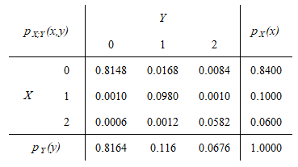
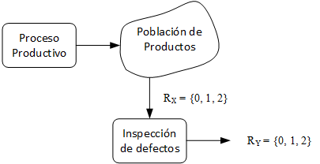
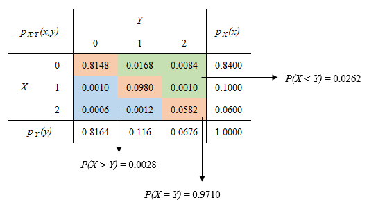

Variables Aleatorias Multidimensionales
Ejercicios Guía de TP
E5.1
La calidad de un producto se determina de acuerdo al número de defectos que contiene. Sea \(X\) la variable aleatoria que representa el número de defectos por unidad. Estos productos son sometidos a revisión. Sea \(Y\) la variable aleatoria que representa el número de defectos por unidad detectados por el sistema de revisión. La distribución conjunta de probabilidades \(p_{X,Y}\) se muestra en la siguiente tabla:

Figura 1: Distribuciones de probabilidad conjunta y marginales
Planteo
- Se supone un proceso de producción que fabrica un producto dado y en cuya salida se puede conceptualizar una población de productos terminados, los cuales pueden someterse luego a una inspección de calidad.
- Un producto puede tener desde ninguno hasta lo sumo dos defectos reales, \(R_{X}=\{0,1,2\}\)
- El sistema de revisión puede identificar correctamente ninguno o todos los defectos reales, esto es, \(R_{Y}=\{0,1,2\}\).

Figura 2: Planteo del ejercicio 5.1
a) Calcular \(P(X > Y)\), \(P(X = Y)\) y \(P(X < Y)\). Expresar en forma literal que representan cada uno de los eventos cuyas probabilidades se han calculado.
El evento \(X > Y\) representa la situación donde los defectos reales son mayores a los detectados por el sistema de revisión, es decir, son los falsos negativos que arroja el sistema (elementos por debajo de la diagonal de la tabla de sitribución conjunta):
\(P(X > Y) = P[(X = 1 \cap Y = 0) \cup (X = 2 \cap Y = 0) \cup (X = 2 \cap Y = 1)]\)
Como los eventos son disjuntos, es posible escribir:
\(P(X > Y) = P(X = 1, Y = 0) + P(X = 2, Y = 0) + P(X = 2, Y = 1) \enspace \rightarrow \enspace \boxed{P(X > Y) = 0.0028}\)
El evento \(X = Y\) representa la situación donde los defectos reales son iguales a los detectados por el sistema de revisión, es decir, son los positivos verdaderos que arroja el sistema (elementos en la diagonal de la tabla de sitribución conjunta):
\(P(X = Y) = P(X = 0, Y = 0) + P(X = 1, Y = 1) + P(X = 2, Y = 2) \enspace \rightarrow \enspace \boxed{P(X = Y) = 0.9710}\)
El evento \(X < Y\) representa la situación donde los defectos reales son menores a los detectados por el sistema de revisión, es decir, son los falsos positivos que arroja el sistema (elementos por arriba de la diagonal de la tabla de sitribución conjunta):
\(P(X < Y) = P(X = 0, Y = 1) + P(X = 0, Y = 2) + P(X = 1, Y = 2) \enspace \rightarrow \enspace \boxed{P(X < Y) = 0.0262}\)

Figura 3: Cálculo de eventos en la tabla de distribución conjunta
b) Encontrar la distribución marginal de \(X\) y la correspondiente a \(Y\).
Las distribuciones marginales \(p_{X}(x)\) y \(p_{Y}(y)\) se hallan en los márgenes (de allí su nombre) de la tabla de ditribución conjunta. Ya han sido calculadas y se indican en dicha tabla.
c) Determinar los valores esperados de \(X\) y de \(Y\), y las dispersiones de dichas variables.
Hallar lo pedido requiere simplemente plantear las definiciones de valor esperado y dispersión.
\(E(X) = \mu_{X} = \sum_{R_{X}}xp_{X}(x) \enspace \rightarrow \enspace \boxed{E(X) = 0.2200}\)
\(E(Y) = \mu_{Y} = \sum_{R_{Y}}yp_{Y}(y) \enspace \rightarrow \enspace \boxed{E(X) = 0.2512}\)
\(\sigma_{X} = +\sqrt{\sigma_{X}^2} = +\sqrt{E[(X - \mu_{X})^2]} = +\sqrt{E(X^2)-\mu_{X}^2} \enspace \rightarrow \enspace \boxed{\sigma_{X} = 0.5400}\)
\(\sigma_{Y} = +\sqrt{\sigma_{Y}^2} = +\sqrt{E[(Y - \mu_{Y})^2]} = +\sqrt{E(Y^2)-\mu_{Y}^2} \enspace \rightarrow \enspace \boxed{\sigma_{Y} = 0.5686}\)
d) Evaluar las probabilidades condicionales definidas por \(P(Y ≤ X | X = 1)\) y \(P(Y ≤ X | X ≤ 1)\).
Al igual que en el punto anterior, para poder hallar lo pedido es suficiente con plantear la definición de probabilidad condicional de una distribución conjunta, y considerando luego que los eventos intervinientes son disjuntos:
\(P(Y ≤ X | X = 1) = \frac{P(Y ≤ X) \cap P(X = 1)}{P(X = 1)} = \frac{p_{X,Y}(0,1) + p_{X,Y}(1,1)}{p_{X}(X = 1)} \enspace \rightarrow \enspace \boxed{P(Y ≤ X | X = 1) = 0.9900}\)
\(P(Y ≤ X | X ≤ 1) = \frac{P(Y ≤ X) \cap P(X ≤ 1)}{P(X ≤ 1)} = \frac{p_{X,Y}(0,0) + p_{X,Y}(0,1) + p_{X,Y}(1,1)}{p_{X}(X ≤ 1)} \enspace \rightarrow \enspace \boxed{P(Y ≤ X | X ≤ 1) = 0.9721}\)
e) Hallar el valor esperado de \(X − Y\).
Dado que el valor esperado de una combinación lineal de variables aleatorias es igual a la combinación lineal de sus valores esperados, puede escribirse:
\(E(X − Y) = E(X) - E(Y) \enspace \rightarrow \enspace \boxed{E(X − Y) = -0.0312}\)
f) ¿Son las variables \(X\) y \(Y\) independientes?
Las variables aleatorias \(X\) y \(Y\) son dependientes si se verifica que para todo par \((x, y)\) se cumple que \(p_{X,Y}(x, y) = p_{X}(x)p_{Y}(y)\). Como se desprende de la tabla de distribución de probabilidad conjunta, para el par \((X=0, Y=0)\) no se verifica la condición de independencia, por lo que dichas variables son dependientes.
g) Hallar la matriz de covarianzas y el coeficiente de correlación de \((X,Y)\).
Nuevamente, para determinar lo pedido basta con aplicar la definición de los conceptos. Para la matriz de covarianzas, sólo resta calcular \(COV(X,Y)\) dado que las varianzas de las variables aleatorias ya fueron calculadas en el punto c.
\(COV(X,Y) = \sigma_{XY} = E[(X - \mu_{X})(Y - \mu_{Y})] = E(XY) - \mu_{X}\mu_{Y} \enspace \rightarrow \enspace \boxed{COV(X,Y) = 0.2799}\)
\(\begin{split}\Sigma = \begin{vmatrix} \sigma_{X}^2 & \sigma_{XY} \\ \sigma_{YX} & \sigma_{Y}^2 \\ \end{vmatrix} \enspace \rightarrow \enspace \boxed{\Sigma = \begin{vmatrix} 0.2916 & 0.2799 \\ 0.2799 & 0.3233 \\ \end{vmatrix}}\end{split}\)
\(\rho_{XY} = \frac{\sigma_{XY}}{\sigma_{X}\sigma_{Y}} \enspace \rightarrow \enspace \boxed{\rho_{XY} = 0.9117}\)